"Oi! Tudo bem? Seja bem vindo a uma viajem virtual pela Alemanha!"
CONHECENDO A ALEMANHA!
A Alemanha é um país que combina tradição e inovação em cada detalhe.
Localizada no coração da Europa, é reconhecida pela rica cultura, pela gastronomia diversificada, por sua forte economia e pela sua tecnologia de ponta.
Conhecer a Alemanha é mergulhar em uma das nações mais fascinantes do mundo!
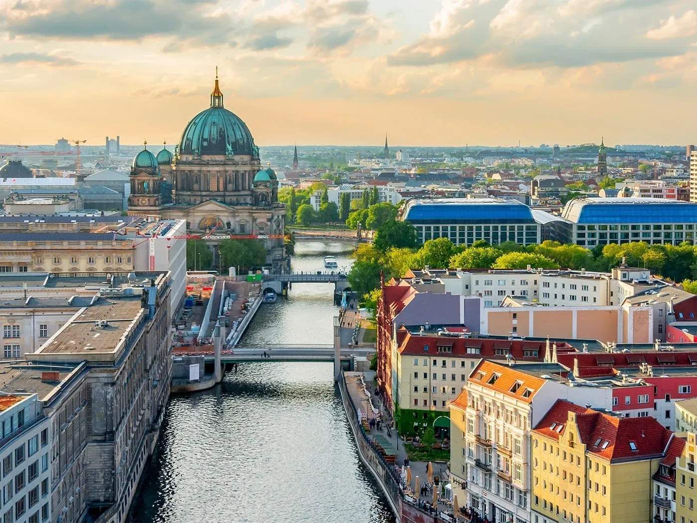
🕰️ HISTÓRIA
A Alemanha foi unificada em 1871, sob a liderança do chanceler Otto von Bismarck, tornando-se uma potência europeia.
O país teve papel central nas duas Guerras Mundiais, sofrendo grandes perdas e divisões após 1945. Com o fim da Segunda Guerra, foi separada em Alemanha Ocidental (capitalista) e Alemanha Oriental (socialista), divididas pelo Muro de Berlim.
A reunificação aconteceu em 1990, após a queda do muro em 1989, marcando o início de um período de crescimento e estabilidade.
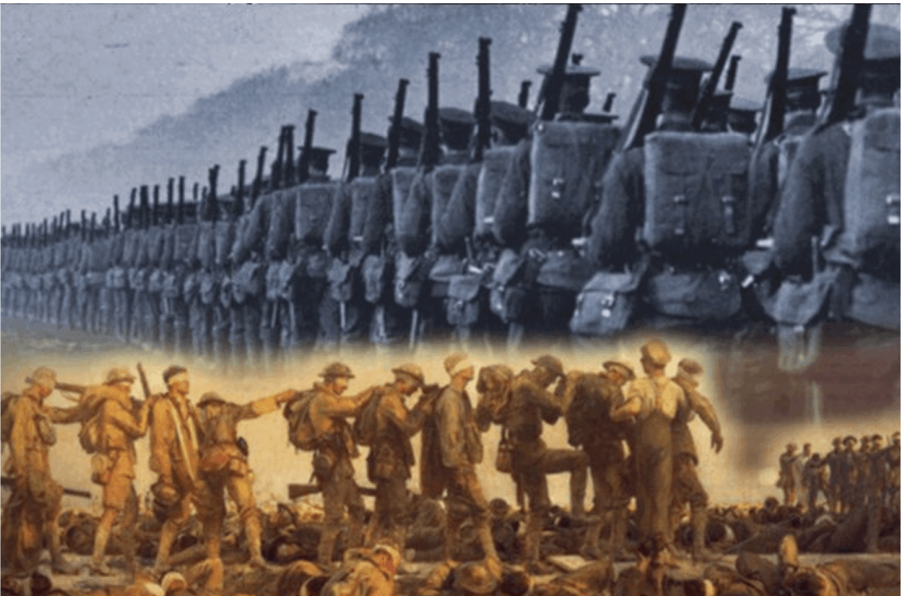
🎭 CULTURA
A cultura alemã é marcada pela disciplina, pontualidade e eficiência.
O país é berço de grandes músicos, como Beethoven e Bach, filósofos como Kant e Nietzsche, e cientistas como Albert Einstein.
A Alemanha valoriza muito a educação, as artes, a música clássica e a preservação ambiental.
Seus teatros, museus e festivais culturais são reconhecidos mundialmente.
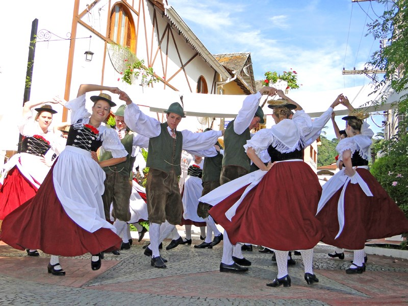
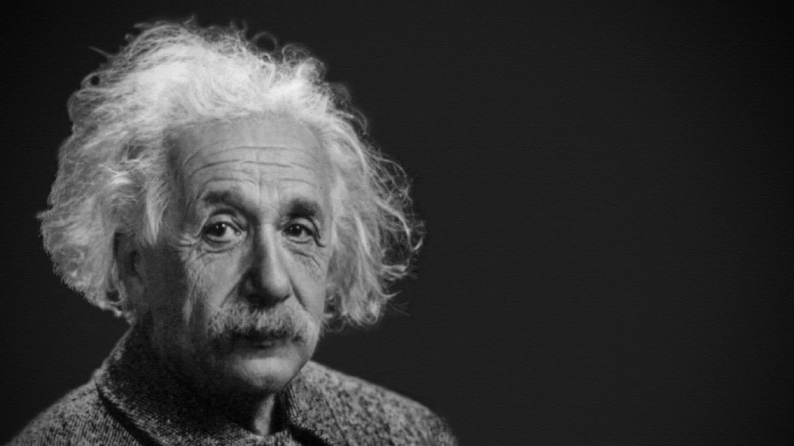
📍 LOCALIZAÇÃO
Situada na Europa Central.
Faz fronteira com nove países, incluindo França, Áustria, Suíça e Polônia.
Capital: Berlim.
Clima temperado, com invernos frios e verões moderados.
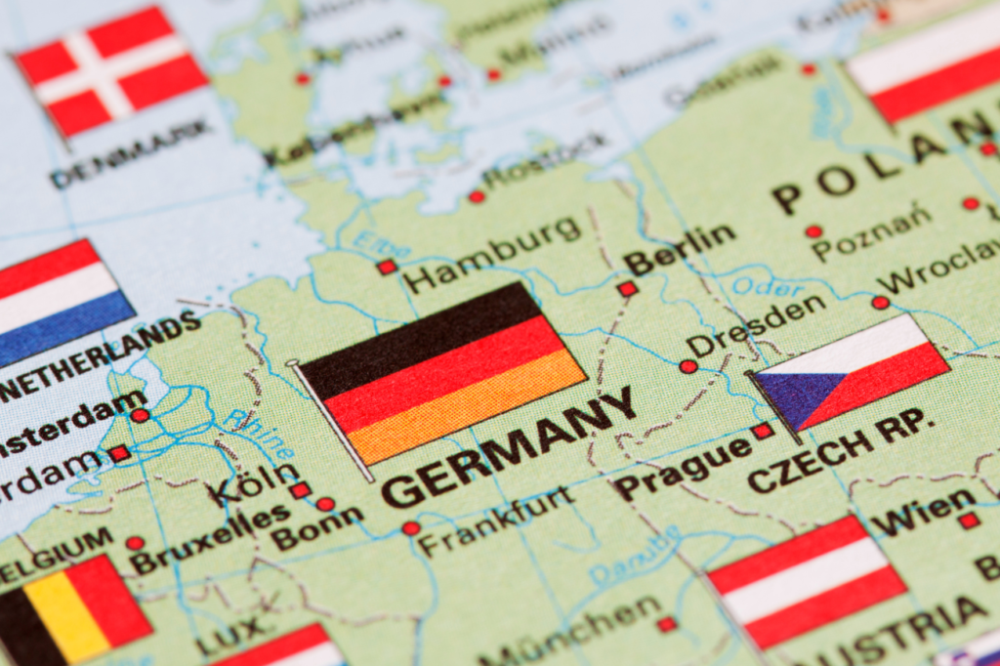
🎉 TRADIÇÕES
Entre as tradições mais conhecidas está a Oktoberfest, o maior festival de cerveja do mundo, realizado em Munique.
O Natal é uma época muito celebrada, com os famosos mercados natalinos (Weihnachtsmärkte) e o calendário do advento.
Na Páscoa, é comum pintar ovos coloridos e fazer caças aos ovos. O Dia da Unidade Alemã, em 3 de outubro, celebra a reunificação do país em 1990.
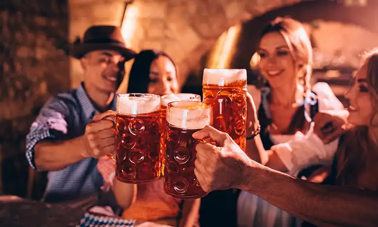
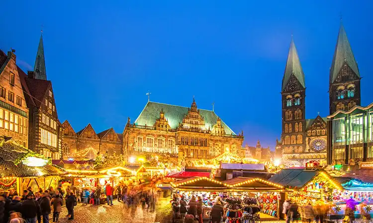
🏰 MONUMENTOS HISTÓRICOS
A Alemanha possui muitos monumentos e construções de grande valor histórico.
Entre eles estão o Portão de Brandemburgo, símbolo da unidade alemã; o Castelo de Neuschwanstein, na Baviera, que inspirou o castelo da Disney;
a Catedral de Colônia, uma das maiores igrejas gótóticas da Europa; e o Memorial do Holocausto, em Berlim, que homenageia as vítimas do nazismo.
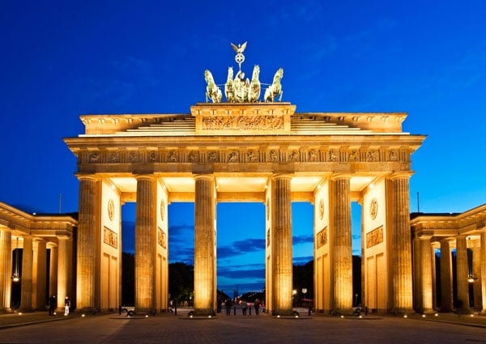
🍽️ GASTRONOMIA
A culinária alemã é diversificada e saborosa.
Entre os pratos mais típicos estão as salsichas (Wurst), o chucrute (Sauerkraut), o bife empanado (Schnitzel), o pretzel e a sobremesa Apfelstrudel (torta de maçã).
A cerveja é parte importante da cultura gastronômica, com centenas de tipos regionais produzidos em todo o país.
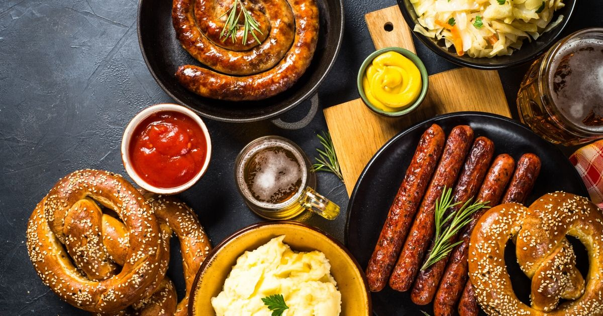
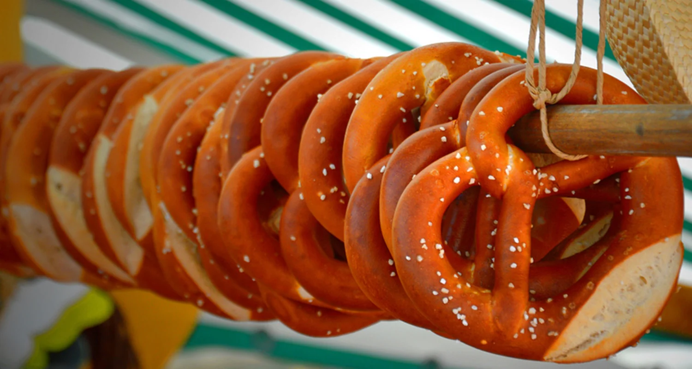
💼 MERCADO DE TRABALHO
A Alemanha tem uma das economias mais fortes e estáveis do planeta.
Os principais setores são engenharia, tecnologia, automóveis, química, energia renovável e saúde.
O país busca constantemente profissionais qualificados e oferece boas oportunidades para imigrantes especializados.
O salário mínimo é alto e o equilíbrio entre vida pessoal e profissional é valorizado nas empresas.
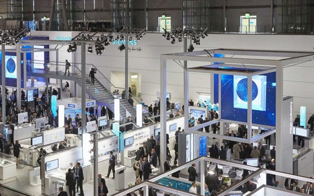
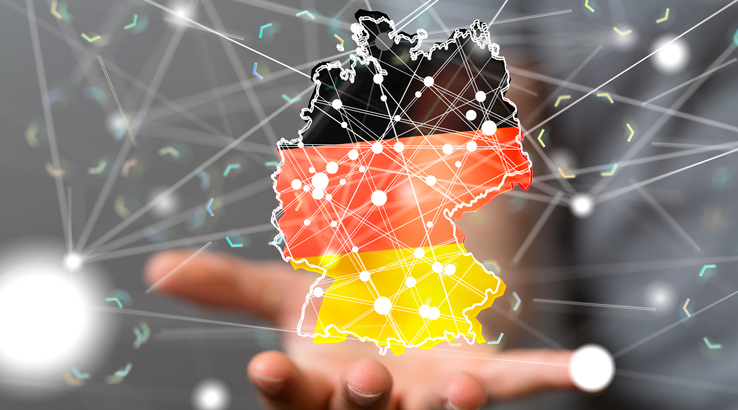
💡 CURIOSIDADES
-O país tem mais de 25 mil castelos, muitos abertos à visitação.
-As rodovias alemãs (Autobahnen) possuem trechos sem limite de velocidade.
-A invenção do livro impresso foi feita pelo alemão Johannes Gutenberg.
-A Alemanha é uma das maiores potências industriais e exportadoras do mundo e se destaca pelo uso de tecnologia sustentável.
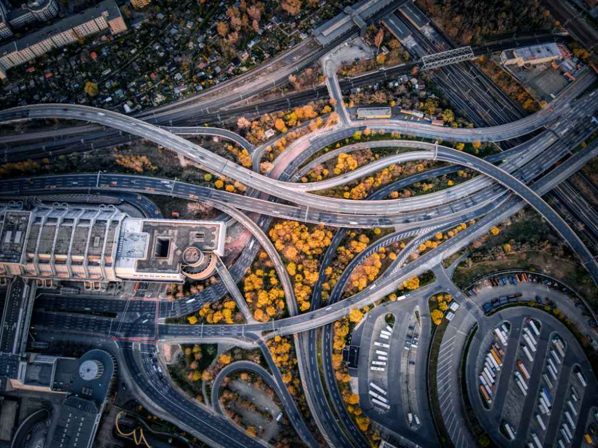
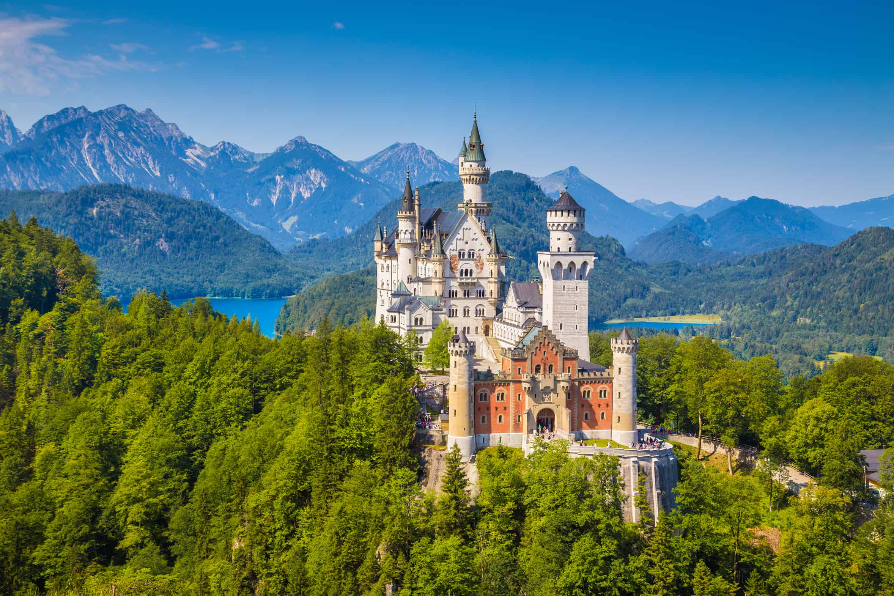
🌎 Sua Jornada com a Brücke Intercâmbios
Clique nos ícones para descobrir o passo a passo para o seu intercâmbio!
🧭Escolha o programa
💶Planeje o orçamento
📄Organize documentos
🏢Peça o visto
✈️Embarque!
Descubra qual tipo de intercâmbio combina com você? 👀